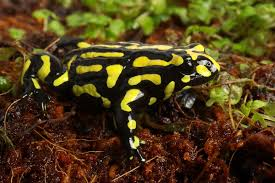
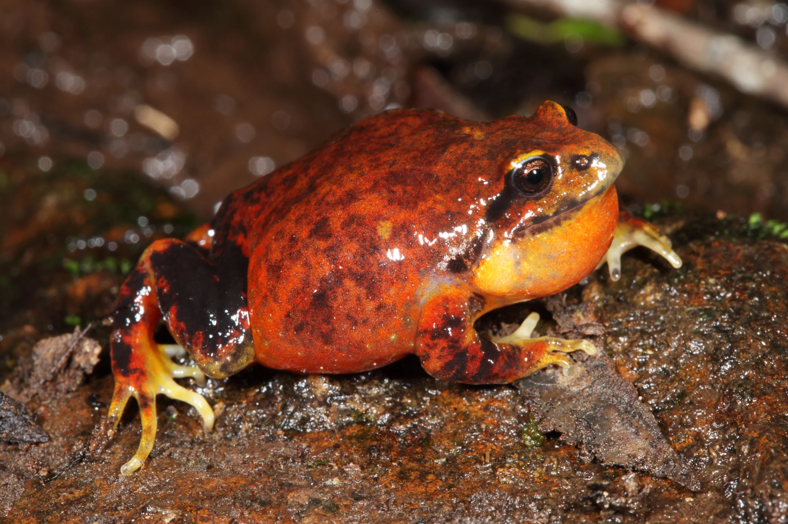
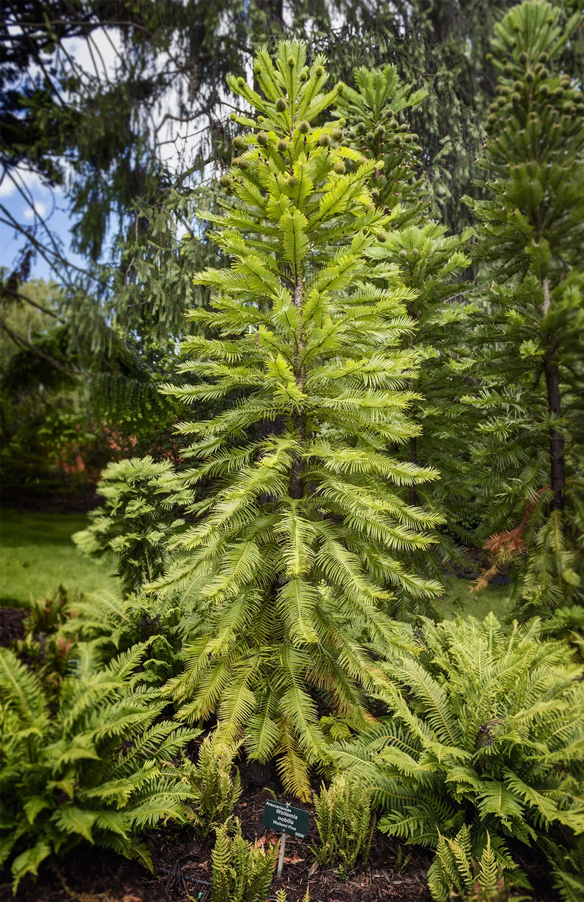
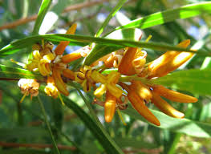
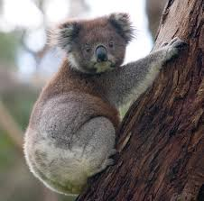
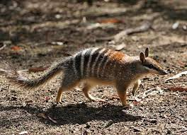
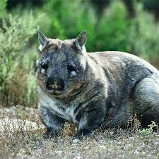
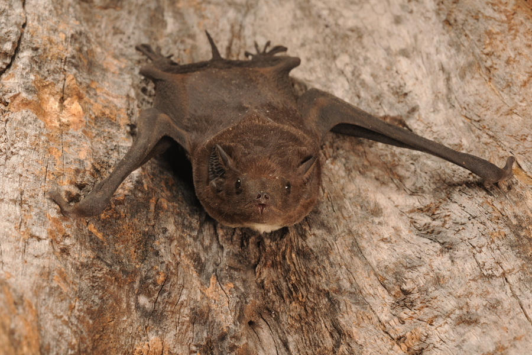

Flora and fauna endangerment
Every year the number of endangered species in Australia grows.
In 2025 there were more than 2000 distinct Critically Endangered, Endangered and Vulnerable species living on our land.
Below: map of all recorded species sightings since 1950
Note: Population data has been used from as early as 2004 as the population of endangered flora and fauna is extremely difficult to measure regularly and thus may be outdated or unavailable
All national priority species have had their population documented on the map
2000+
Threatened Species
164
Threatened Birds
<100
Orange-Bellied Parrots
Birds
Australia's endangered birds face habitat destruction, shrinking ecosystems and climate change.


Orange-Bellied Parrot
Orange-Bellied parrots are one of the lowest population bird species in all of Australia with less than 100 recorded birds appearing each year since 2019.
Conservation efforts have seen increases in population every year, with tens of birds bred in captivity released every year during their migration.
Far Eastern Curlew
These birds can be seen throughout the coastlines of Australia and travel thousands of kilometers each year.
The far eastern curlew, despite having an estimated number of mature birds in the range of 23 thousand, is still a vulnerable species of which nearly 75% come to Australia for the summer to roost.
Monitoring
Population monitoring helps conservationists understand which species are declining most rapidly.
Endangered Birds
Endangered birds which are monitored
There are 5 birds directly monitored by the australian government, being the most at risk in the country.
This contrasts hugely with the 164 endangered birds listed in australia as vulnerable, endangered or critically endangered.
By far the most recorded bird is the far eastern curlew, likely because they are shorebirds and most Australians live near the coastline.
Amphibians
Amphibians are among Australia's most environmentally sensitive species.
Southern Corroboree Frog

Endangered Frogs
Red and Yellow Mountain Frog

Frog populations are rapidly declining due to habitat destruction, disease and changing environmental conditions.
Captive breeding programs have become essential to the survival of several endangered amphibian species.
Distribution
Endangered amphibians are concentrated in fragile alpine and rainforest ecosystems.
Threats
Climate change and fungal disease remain major threats to Australian frog species.
Plants
Native Australian flora supports entire ecosystems and biodiversity hotspots.
Wollemi Pine

Vis
Small-Flowered Snottygobble

Many plant species are vulnerable due to land clearing, bushfires and invasive species.
Rare flora often survive only within isolated environments and protected habitats.
Environmental Pressure
Habitat fragmentation continues to reduce biodiversity throughout Australia.
Conservation
Long-term conservation efforts are critical for ecosystem survival.
Mammals
Australia has one of the world's highest mammal extinction rates.
Koala

Vis
Numbat

Introduced predators and habitat fragmentation continue to threaten native mammals.
Conservation reserves play an increasingly important role in species survival.
Distribution
Threatened mammal species are distributed across diverse ecosystems.
Conservation Areas
Protected habitats help preserve Australia's remaining native mammals.
Northern Hairy-Nosed Wombat

Bare-Rumped Sheathtail Bat

This visualisation is created by Odin.
Datasources: Threatened Species Index , Movebank , DNRET